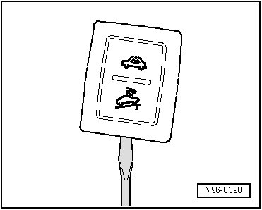
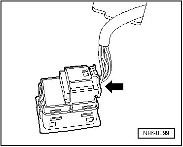

Interior Monitoring and Vehicle Inclination Deactivation Switch, through 11.06
Interior Monitoring and Vehicle Inclination Deactivation Switch, through 11.06
Interior Monitoring Deactivation Switch (E267) and Deactivate Vehicle Inclination Sensor Button (E360), through 11/06, removing and installing
CAUTION!
When removing and installing components in visible area (switches, covers, trim, etc.), cover by taping the areas at which a prying tool (plastic wedge, screwdriver) will be positioned using commercially available adhesive tape.
• To remove the Interior Monitoring Deactivation Switch (E267) and Deactivate Vehicle Inclination Sensor Button (E360), anti-theft warning system must be deactivated.
• The Interior Monitoring Deactivation Switch (E267) and Deactivate Vehicle Inclination Sensor Button (E360) comprise one component.
• Interior Monitoring Deactivation Switch (E267) and Deactivate Vehicle Inclination Sensor Button (E360) are located in B-pillar trim on driver's side.
Removing
- Switch off ignition, switch off all electrical consumers and remove ignition key.
- Carefully pry out Interior Monitoring Deactivation Switch (E267) and Deactivate Vehicle Inclination Sensor Button (E360) using a screwdriver.

- Release and disconnect the connector - arrow -.

Installing
Install in reverse order of removal.